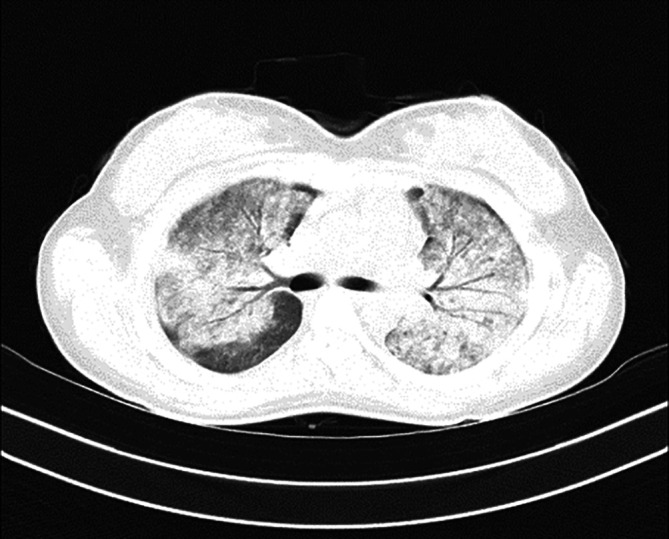

Ficha del catálogo
Síndrome de distrés respiratorio agudo
- Sistema
- Respiratorio
- Modalidad
- TC
- Región
- Tórax
- Dificultad
- Avanzado
Insuficiencia respiratoria aguda causada por daño alveolar difuso con edema de origen no cardiogénico. Se desencadena por sepsis, aspiración, traumatismo grave, pancreatitis o neumonía extensa. Requiere ventilación mecánica y la imagen tiene un papel clave en el seguimiento y en la detección de complicaciones.
Técnica
Tomografía de tórax sin contraste en el paciente crítico, con radiografía portátil diaria como herramienta de seguimiento a pie de cama.
Qué observar
- Opacidades bilaterales difusas de predominio periférico y en zonas dependientes
- Gradiente anteroposterior de densidad con consolidación en las zonas declives
- Vidrio deslustrado extenso combinado con consolidaciones
- Silueta cardiaca normal y escaso o nulo derrame pleural
- Broncograma aéreo dentro de las áreas consolidadas
- Barotrauma como complicación: Neumotórax, neumomediastino y quistes
Hallazgos
Afectación pulmonar bilateral heterogénea con vidrio deslustrado y consolidaciones dependientes, sin cardiomegalia ni signos de sobrecarga hidrostática.
Perlas
El pulmón en el distrés no es homogéneo sino que tiene zonas colapsadas dependientes y zonas aireadas ventrales, lo que explica el uso del decúbito prono. La aparición súbita de enfisema intersticial o neumotórax indica barotrauma y es una urgencia.
Diagnóstico diferencial
- Edema cardiogénico
- Distribución central, cardiomegalia, líneas septales y derrame.
- Neumonía difusa
- Puede iniciarse focal y evolucionar, con contexto microbiológico definido.
- Hemorragia alveolar difusa
- Anemización con hemoptisis y resolución rápida de las opacidades.
Simuladores
- Sobrecarga hídrica en el paciente crítico
- Atelectasias masivas por decúbito prolongado
- Neumonía organizada
Por modalidad
- RX
- Seguimiento diario y detección de complicaciones
- TC
- Caracteriza la distribución y detecta barotrauma y causas subyacentes
Protocolo
Tomografía sin contraste con adquisición en apnea si es posible. Radiografías portátiles diarias con parámetros técnicos constantes.
Clasificación
La gravedad se establece por el grado de hipoxemia con soporte ventilatorio estandarizado, junto con la presencia de infiltrados bilaterales no explicados por causa cardiaca.
Errores frecuentes
- Atribuir las opacidades a sobrecarga hídrica sin valorar el contexto
- Pasar por alto un neumotórax anterior en la radiografía en decúbito
- No revisar la posición de los dispositivos de soporte en cada control

sdra distres respiratorio dano alveolar difuso barotrauma paciente critico ventilacion